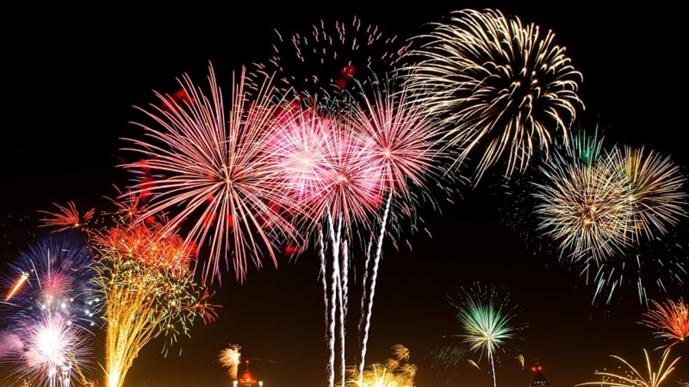
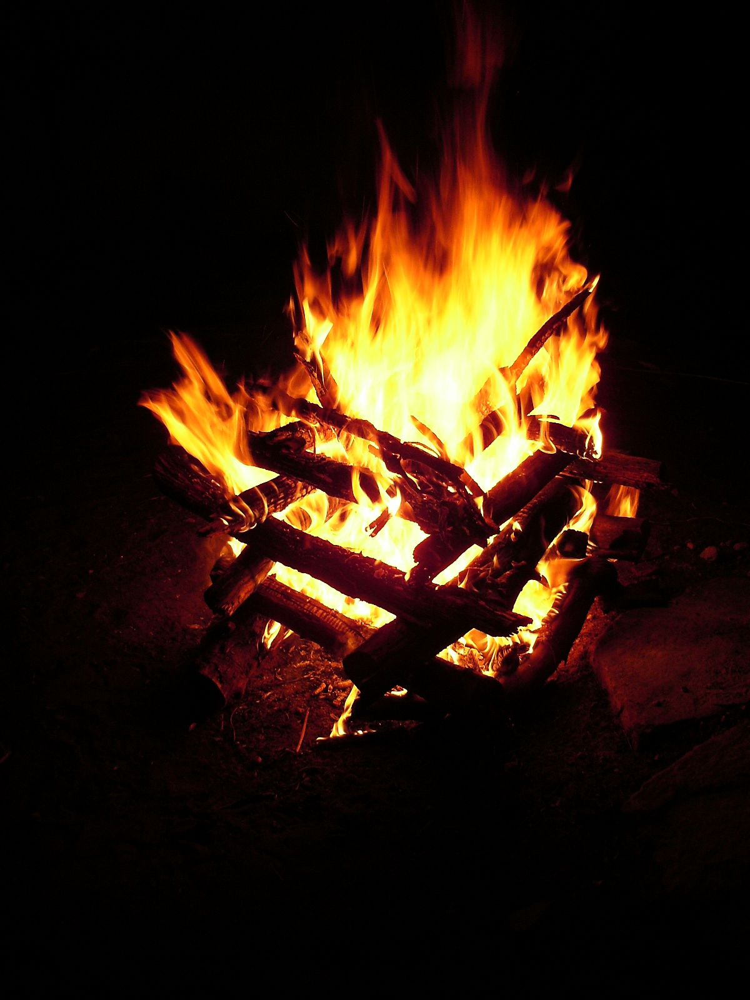
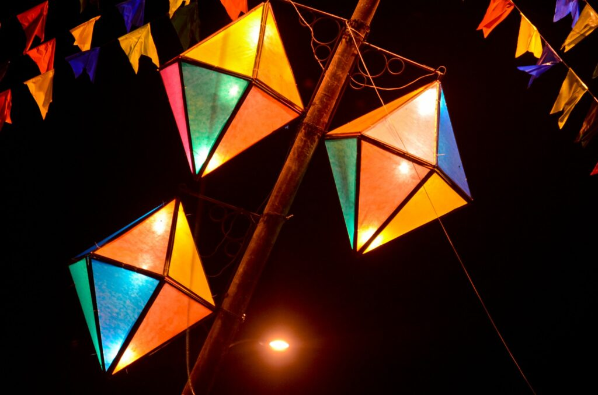
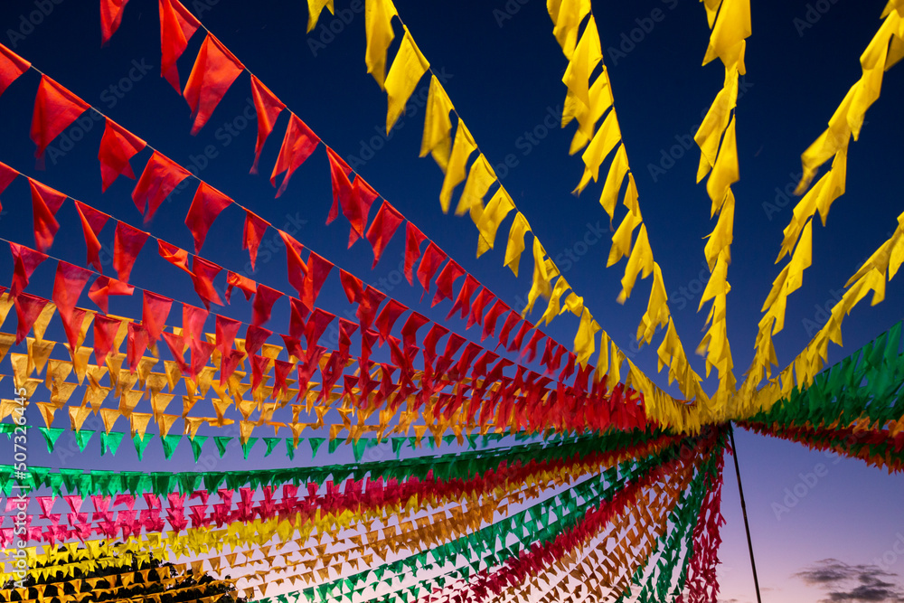
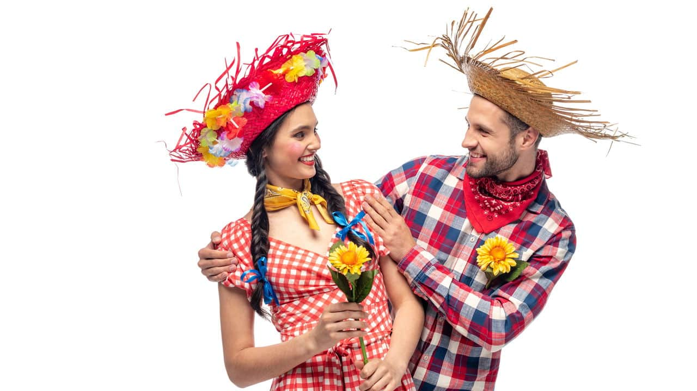
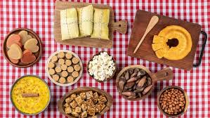

As festas juninas são comemorações que acontecem no mês de junho no Brasil. Nela se comemoram três santos populares: Santo Antônio, São Pedro e São João. A origem da festa junina é pagã, ou seja, é contrária à doutrina cristã, porque as festas que deram origem às festas juninas homenageavam os deuses da natureza e da fertilidade e pediam fartura nas safras, pois era nessa altura que começava o período da colheita de cereais. Mas, como a igreja não conseguia acabar com a popularidade dessa festa - que surgiu há centenas de anos -, acabou aderindo a ela e atribui-lhe um caráter religioso. Tradicionalmente, as festas juninas começam no dia 12 de junho, véspera do dia de Santo Antônio, e encerram no dia 29 de junho, dia de São Pedro. Já nos dias 23 e 24 é celebrado o dia de São João. A origem da festa junina é pagã e, assim, não tinha o caráter religioso que assumiu anos depois, e que continua até hoje. Quem trouxe a festa junina para o Brasil foram os portugueses, no período colonial. Em Portugal, a festa junina tinha o nome de Festa Joanina - possivelmente pelo fato de acontecer em junho ou talvez por causa de São João, que é o principal santo da comemoração - motivo pelo qual as festas juninas também são chamadas de Festa de São João.
Muitas tradições que acompanham essa comemoração representam os principais símbolos das festas juninas que incluem: as comidas, as danças típicas, os balões, a fogueira, as brincadeiras e as roupas.
Nas festas juninas ouve-se e dança-se forró. A quadrilha junina é, todavia, a dança típica da festa. As celebrações típicas das Festas Juninas também são marcadas por danças, e as mais populares desse período são:
forró;
quadrilha;
arrasta-pé;

baião;
xaxado;
Os balões são tradicionais, embora atualmente existam restrições por questões de segurança. Tradicionalmente, a soltura de balões indica o início das comemorações. A fogueira também faz parte do cenário da festa. De origem pagã, ela simboliza a proteção contra os maus espíritos.
  As roupas tradicionais de festa junina são tipicamente caipiras, com vestimentas bem coloridas e de estampa xadrez e a quadrilha de São João, como dança tradicional.
A maior Festa Junina do Brasil é realizada na cidade de Campina Grande, na Paraíba.
A quadrilha é uma das danças tradicionais das Festas Juninas, e essa tradição teve origem em danças da França.
As bandeirolas são itens decorativos em homenagem a três santos católicos.
O milho é um alimento muito importante nessas comemorações e, por isso, diversas comidas típicas de festa junina levam esse ingrediente. Os principais pratos típicos de festa junina são: pipoca, paçoca, pé de moleque, canjica, cachorro-quente, pamonha, curau, bolo de milho, arroz-doce, pinhão, cuscuz e tapioca. Já as bebidas mais tradicionais são: vinho quente e quentão.
Primeiramente, a minha equipe que disponibilizou os "Direitos Autorais" pelas imagens e audio. Logo, aqui está as fontes de ajudar, de pesquisa e vídeos de consulta e claro, o Querido ChatGPT❤️